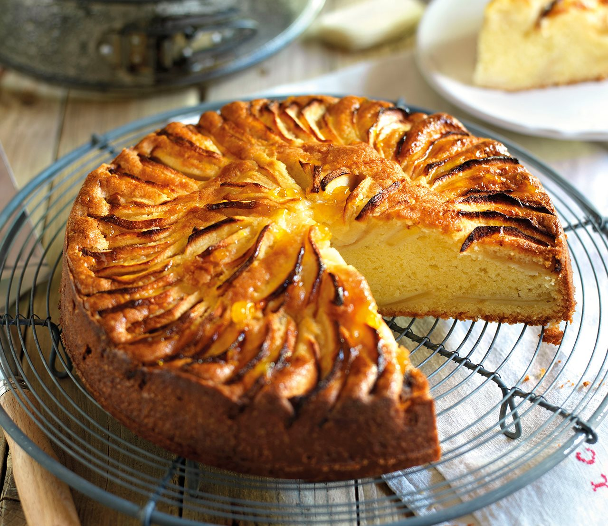

Tarta de Manzana

Una deliciosa tarta de manzana con un toque de canela.
Ingredientes
- 2 manzanas
- 1 taza de azúcar
- 2 tazas de harina
- 1 cucharadita de canela
- 1/2 taza de mantequilla
Pasos
- Precalentar el horno a 180°C.
- Mezclar la harina, el azúcar y la canela.
- Agregar la mantequilla y mezclar hasta obtener una masa homogénea.
- Colocar las manzanas en rodajas sobre la masa.
- Hornear durante 45 minutos.
Video de la receta
Enlaces